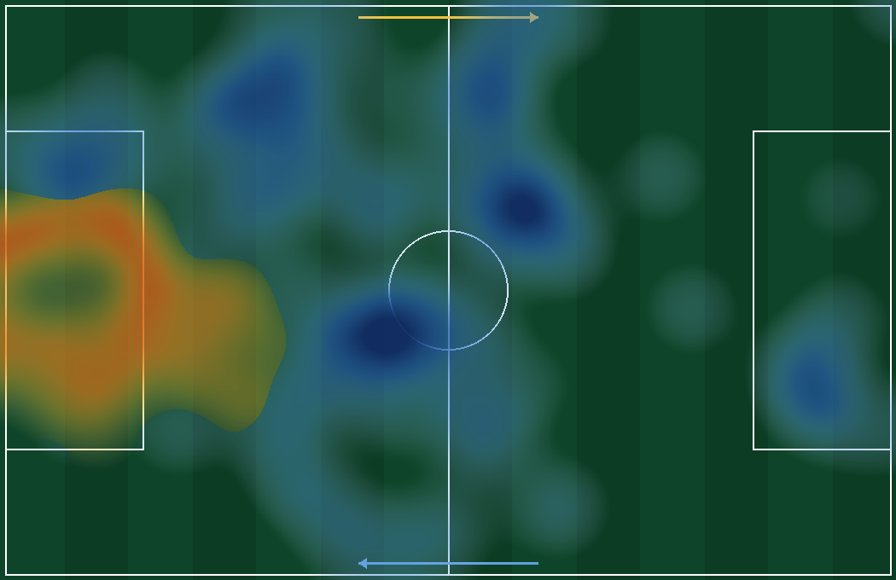
Alisson BeckerAyase Ueda
GOLEIRO · #1
Alisson Becker
FGT61Nota7.7Passe82%Duelos100%
Pega Ayase Ueda0.42 xGI/90 · 67% drible
Erra muito passe13 passes errados (18%)
O modelo dá 52% ao Brasil. O resto é tragédia possível. Vencer o Japão exige menos talento e mais método, porque o número não perdoa o improviso.
Toda Copa, o brasileiro acorda dividido entre dois homens que moram nele: o craque que acredita e o derrotado que já sofreu. Na segunda-feira, 29 de junho, contra o Japão, esses dois homens vão sentar lado a lado no sofá e brigar. O laudo que se segue não vem consolar nenhum dos dois. Vem armá-los.
O Japão não é figurante. É um adversário de pé pequeno e passe seco, que fez sete gols na fase de grupos e que ataca o intervalo entre o lateral e o zagueiro com a frieza de um relojoeiro suíço. Subestimá-lo seria o primeiro pecado, e o futebol, esse santo vingativo, cobra os pecados à vista.
Mas há esperança, e ela tem lastro. O Brasil criou quase o dobro de perigo. Tem Vinícius como força da natureza pela esquerda e Matheus Cunha como o algoz silencioso que transforma meia-chance em gol. Tem Alisson, o muro. A matéria-prima do triunfo está toda na mochila. Falta a disciplina de não desperdiçá-la.
Este dossiê é a tradução do talento em plano. Moneyball à brasileira: o coração que pulsa e a planilha que pensa, juntos, porque separados já perdemos finais demais.
O modelo de Poisson, alimentado pelos gols esperados, é cruel na sua honestidade: Brasil 52%, empate 24,5%, Japão 23,5%. Traduzindo o frio da estatística para o calor da arquibancada: em metade dos universos possíveis o Brasil avança sorrindo. Na outra metade, sofremos até o último minuto, e numa fatia bem real, choramos.
Os placares mais prováveis são o 1 a 1 (11,6%) e o 1 a 0 (11,3%), com o 2 a 1 logo atrás. Repare: o empate não é uma hipótese remota, é um vizinho que mora no andar de cima e desce a qualquer hora. Cabe um empate inteiro dentro deste jogo.
Favoritismo não é salvo-conduto. É apenas a obrigação de jogar melhor. O Brasil que entrar achando que o placar está resolvido será o Brasil que dará ao Japão a chance de finalizar acima do esperado, exatamente o que aquele time sabe fazer.
Cabe um empate inteiro dentro deste jogo. Favoritismo não é salvo-conduto, é a obrigação de jogar melhor.
Antes de julgar gente, é preciso entender a régua, e a régua aqui é simples como um chute a gol. O xG, o gol esperado, dá a cada finalização uma nota entre zero e um, a probabilidade de aquele chute virar rede: o pênalti vale quase 0,76 porque costuma entrar, o chutão da intermediária vale 0,03 porque quase nunca entra. Some a nota de todos os chutes e você terá o perigo real, separado da sorte. Foi assim que descobrimos a verdade que conforta: na fase, o Brasil somou 7,40 de gol esperado contra 3,95 do Japão, quase o dobro de ameaça. Sobre esse alicerce ergue-se o modelo de Poisson, que pega quantos gols cada time costuma fazer, joga a partida mil vezes na cabeça do computador e conta os finais. O veredito sai frio e honesto: Brasil 52%, empate 24,5%, Japão 23,5%.
E para julgar o homem dentro do time, criamos o FGT Index, uma nota de zero a cem em que cada jogador é comparado a todos os outros por percentil. Quem passa melhor que noventa em cada cem colegas tira nota noventa de passe, e ponto. Mas a planilha tem um freio de juízo, o shrinkage, que impede a injustiça de endeusar quem entrou cinco minutos e fez um lençol: a nota de quem jogou pouco é puxada de volta para a média cinquenta, e só se solta inteira quando o atleta acumula minutos de verdade. É a estatística com humildade, que não confunde o relâmpago com o sol. Com essas três lentes, xG para medir o perigo, Poisson para prever o placar e FGT Index para pesar cada jogador, o resto do laudo deixa de ser opinião e vira diagnóstico.
Na fase de grupos, o Brasil somou 7,40 de xG contra 3,95 do Japão. Em bom português: produzimos quase o dobro de perigo real. Não foi sorte, foi volume, foi insistência, foi a goleada de chance contra a Escócia (4,34 de xG num jogo só). O Brasil cria como quem respira.
O Japão, porém, tem uma virtude que assusta: a verticalidade. 12,4% dos passes japoneses progridem ao terço final, contra 10,6% do Brasil. Eles não acariciam a bola, eles a empurram para frente. Controlar a posse não basta. É preciso matar a transição japonesa na origem, antes que o segundo passe encontre o corredor aberto.
Antes de ver onde o Brasil bate, é preciso entender onde o Japão machuca, porque ali está o perigo a desarmar. Aquele time joga num 3-4-2-1, direto, não de posse, e sua arma é a dinâmica de terceiro homem, um relógio suíço de três ponteiros. O centroavante Ueda baixa como falso nove para atrair um dos nossos zagueiros; devolve para o volante que ficou livre de frente; e este lança nas costas da defesa para Maeda ou Ito infiltrarem em velocidade. Foi assim que mataram Suécia e Tunísia. Some-se a isso a sobrecarga dos lados, com ala, ponta e volante pelo mesmo corredor, para cruzar e pesar a área. A regra de ouro contra essa máquina é uma só: não seguir o Ueda quando ele baixa, porque é exatamente essa mordida na isca que abre o espaço nas costas.
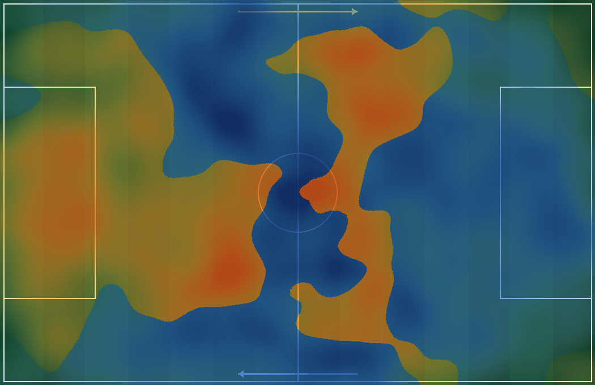
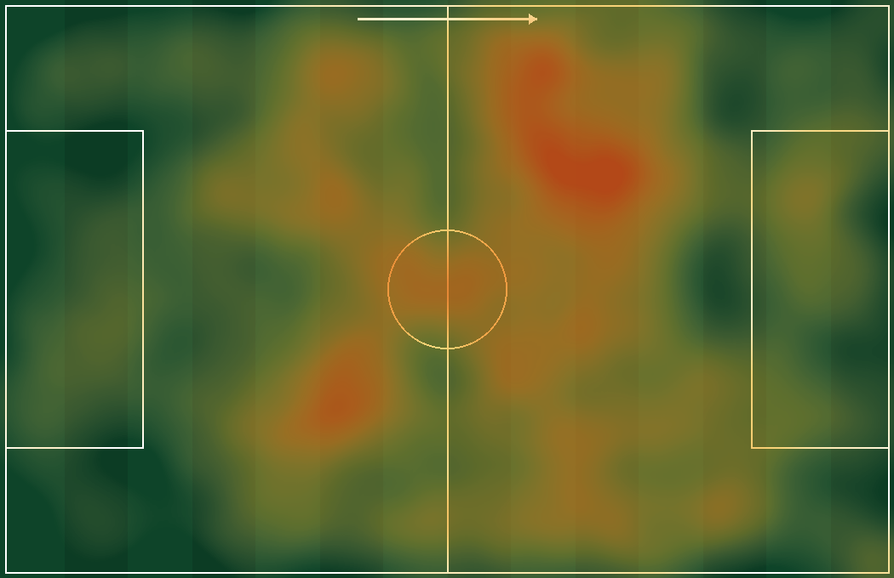
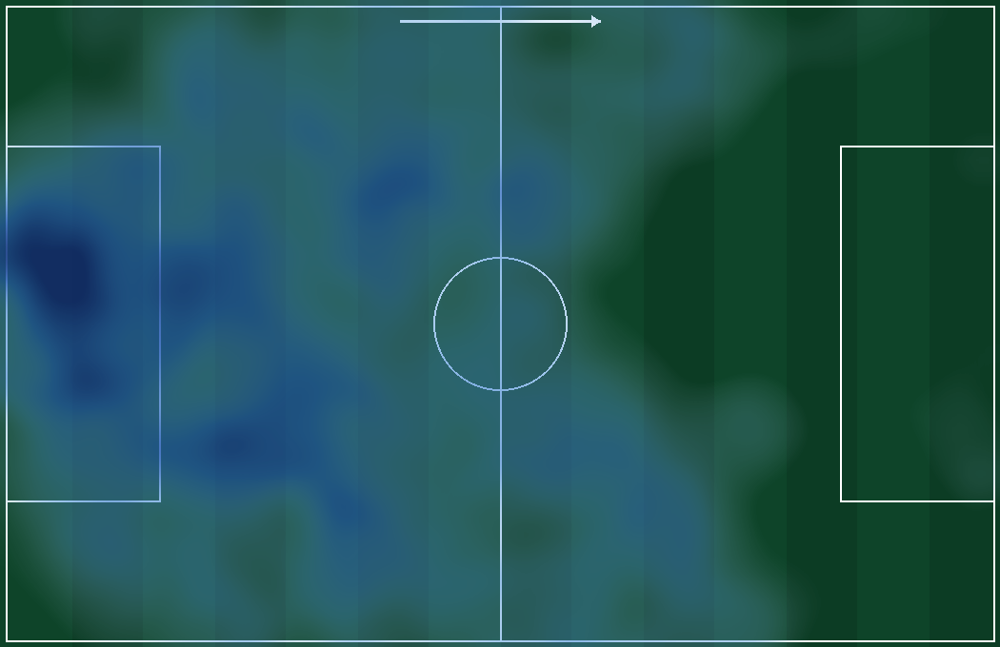
Do lado defensivo, o território japonês revela a costura que cede: o intervalo entre o lateral e o zagueiro, justamente o ponto que o Vini ataca por instinto. O Japão sofre quando obrigado a defender espaço nas costas, e sofre mais ainda quando o ala salta para pressionar e deixa o corredor aberto. Logo, a receita está escrita no próprio chão do campo: atrair, acelerar e atacar aquele vão, e usar as inversões de jogo para desorganizar a linha de cinco antes que ela se feche.
O próprio chão do campo já escreveu a receita: atrair, acelerar e atacar o vão pela esquerda.
Dividindo o campo em nove zonas, a ocupação brasileira se concentra no terço ofensivo esquerdo e no miolo de criação. É de lá que nasce o jogo. Mas mapa de ocupação não é mapa de eficiência: ocupar não é o mesmo que machucar. O segredo é converter presença em profundidade, e há três vãos onde o Japão sangra. O primeiro é a entrada da área: quando a linha de cinco afunda, abre-se o espaço logo à frente, e foi exatamente ali que Holanda, com Summerville, e Suécia, com Elanga, marcaram, com pontas de pé trocado cortando para dentro. A tradução é direta: Rayan, canhoto pela direita, cortando para o miolo, e Vinícius nas diagonais, contra um goleiro Suzuki que decide devagar e já tomou dois gols quase iguais assim.
O segundo vão é o canal entre o zagueiro e o ala japonês, o clássico mismatch, o duelo desigual que Vinícius vence antes de a bola chegar, com Douglas Santos ultrapassando por fora no papel de Dumfries para criar a sobrecarga. O terceiro é a faixa central atrás dos volantes, a entrelinha onde Matheus Cunha aparece para girar e finalizar. Sobrecarregar a esquerda, atrair dois marcadores e soltar o terceiro homem nas costas: eis a partitura escrita no próprio gramado.
Vinícius Júnior é o alfa: quatro gols, 3,51 de xG, volume e finalização na mesma figura. Não é apenas o nosso melhor jogador, é o nosso melhor argumento. Quando ele encara o lateral, o jogo inteiro pende. O radar dele é o de um jogador completo, que cria e conclui, e é em torno dele que o plano se organiza.
Do outro lado, três nomes que não podem dormir sossegados na cabeça da defesa: Ayase Ueda (+1,28 sobre o xG), Daichi Kamada (+1,13) e Keito Nakamura (+0,84). São finalizadores frios, daqueles que não pedem segunda chance. O Japão não cria muito, mas o pouco que cria, ele converte com uma pontaria de assustar. Dar-lhes espaço é convidar a tragédia.
Time não se vence no atacado, vence-se no varejo, homem contra homem, e é aí que o laudo desce do gráfico para o gramado. Há solidez de sobra para celebrar, e ela é também aérea: Gabriel é rochedo, com 89% de duelos no geral e impressionantes 92% no alto, arma de gol na bola parada contra um Japão frágil de cabeça; Marquinhos rege a linha com a serenidade do capitão e ganha 67% no alto; Alisson é o muro de um só gol sofrido em três jogos. Mas há também a ferida que não se pode esconder, e o nome dela é Danilo. Ele ganha só 43% dos duelos e vai pegar Keito Nakamura, que completa 83% dos dribles que tenta. É a conta mais perigosa da partida, e por isso o mandamento é categórico: Danilo é o ponto a blindar, com dobra de Bruno, Rayan baixando para ajudar e cobertura de Marquinhos, jamais isolado no um contra um. Se houver uma só ordem gravada a ferro, é essa.
A segunda ordem gravada a ferro tem nome de volante. Casemiro guarda a zona 14, e a tentação será sair atrás de Ueda quando o centroavante baixar como falso nove. Erro fatal: o combate tem de ser curto, sem se afastar do posto, porque seguir o Ueda é justamente o que abre a entrelinha para o passe assassino de Kamada. Não seguir a isca é meio jogo defensivo ganho. No meio mora ainda outra cautela. Lucas Paquetá foi o brasileiro que mais errou passes, dezenove ao todo, 13% das suas tentativas, e o Japão vive de roubar a bola no miolo e verticalizar no segundo seguinte. A receita é despir a vaidade: jogo simples e rápido, uma troca de toque, duas no máximo. Bruno Guimarães, o motor, ouve o mesmo recado e ainda dá um passo à frente para bloquear o volante Tanaka. À frente, o luxo se chama Matheus Cunha, o matador de mais 1,78 gols acima do esperado, e Vinícius, o alfa de 1,5 de gol esperado mais assistência por 90, a arma número um que ataca as diagonais para a entrada da área, onde o goleiro Suzuki sofre. Cada homem no seu posto, cada fraqueza vestida, cada força ao sol.

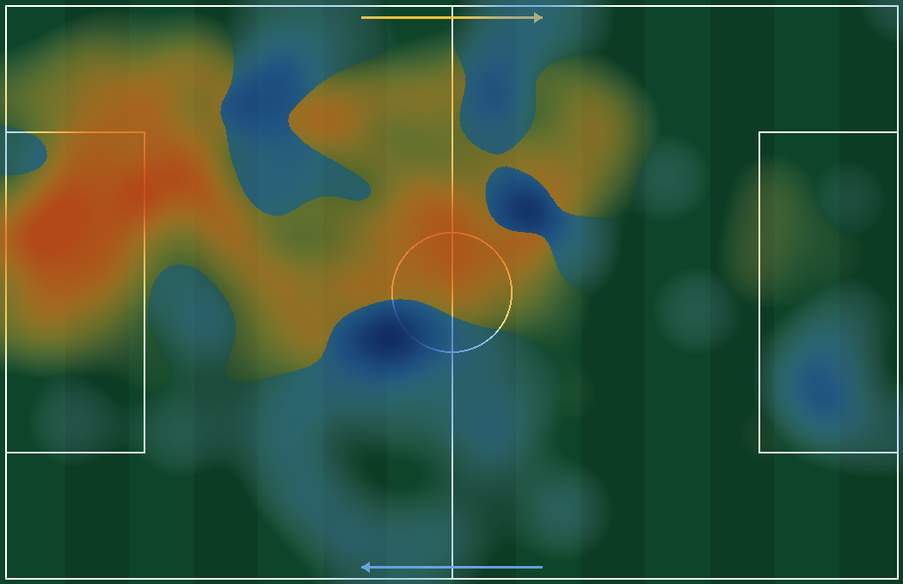
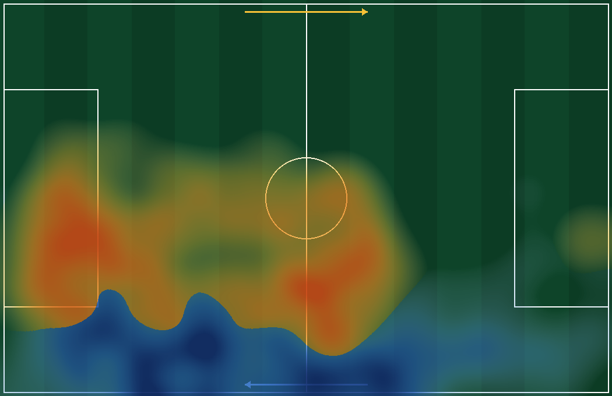
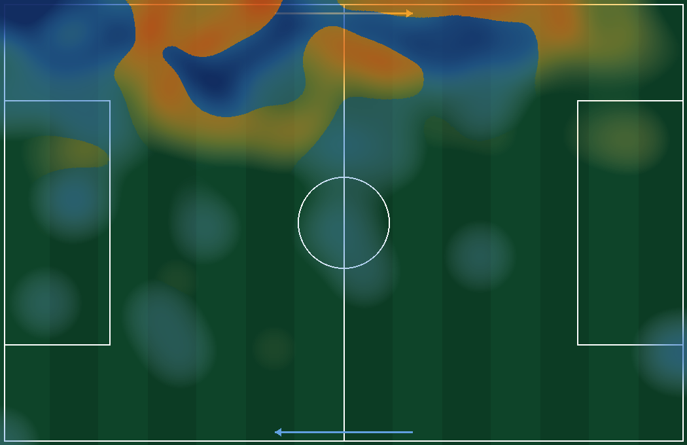
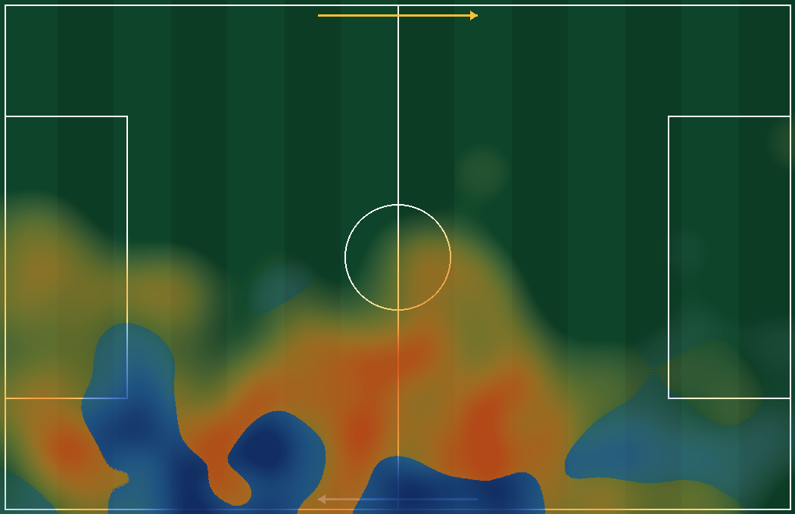
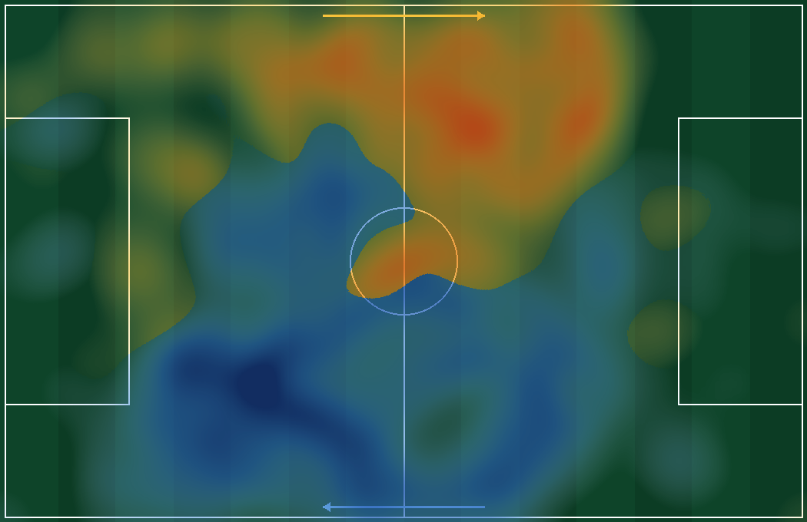
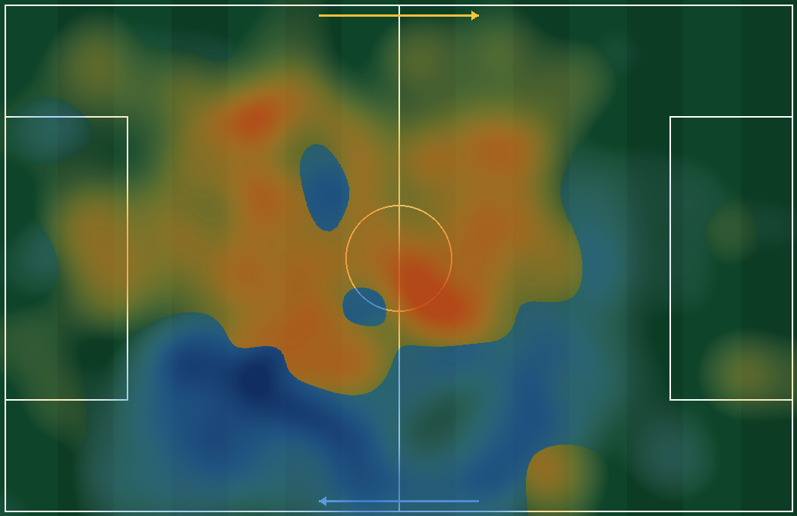
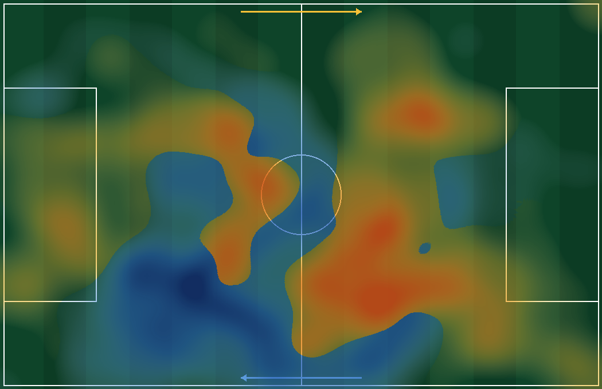
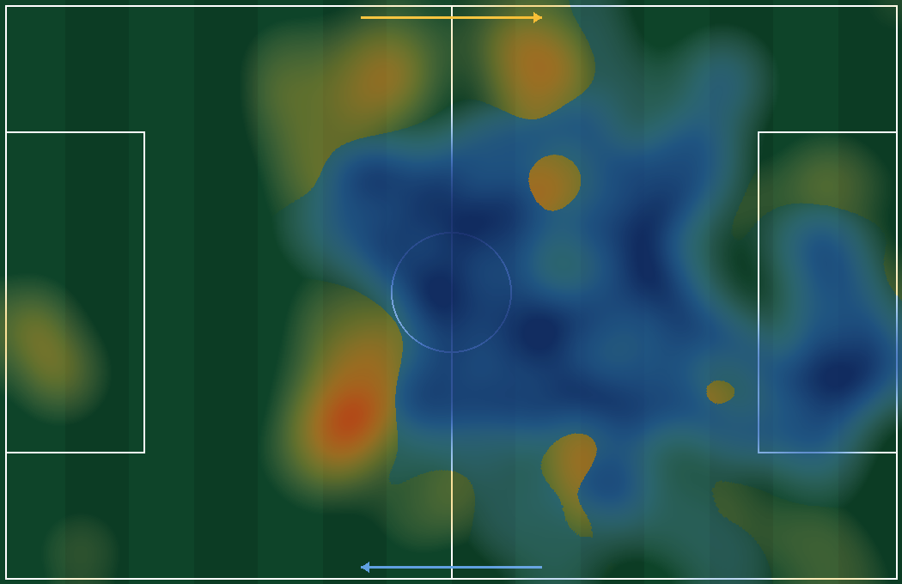
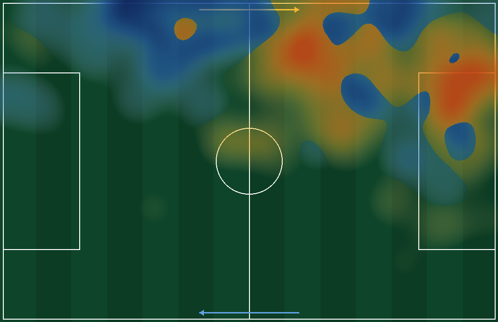
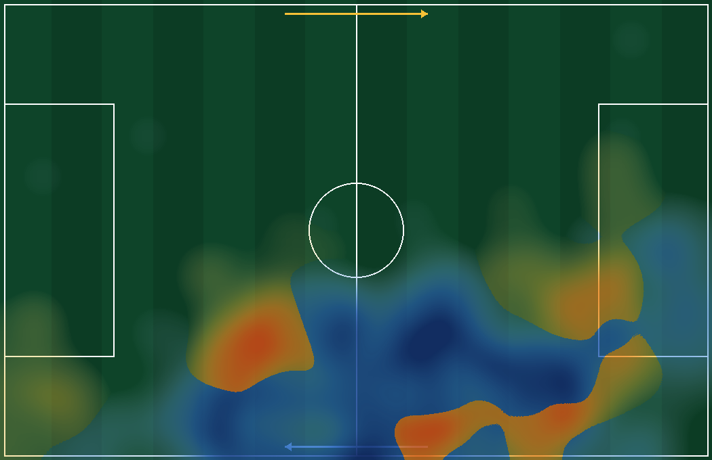
Time não se vence no atacado: blinde Danilo contra Nakamura, simplifique o passe de Paquetá, e solte Vinícius. Homem a homem, é assim que se ganha.
Matheus Cunha é a definição estatística de matador: 3 gols com apenas 1,22 de xG, um saldo de +1,78. Ele faz gol que não devia fazer. Transforma a meia-chance em rede, a sobra em festa. Num jogo de oitavas, em que cada bola vale uma temporada inteira de sonhos, ter um homem que supera o esperado é ter um trunfo escondido na manga.
Mas a estatística que tira o sono é japonesa, e revela o paradoxo do Japão: eles fizeram 7 gols com só 3,95 de xG, convertendo 1,77 vez o esperado, um dos melhores aproveitamentos de toda a Copa. Repare na perversidade do número: aquele time cria pouco, mas o pouco que cria, ele mata. É clínico, cirúrgico, oportunista de sangue frio. Pode ser eficiência de craque, pode ser sorte de principiante, e só o futuro dirá qual das duas. Enquanto não se sabe, trata-se como ameaça real: contra quem finaliza acima da conta, não se concede o chute fácil, e sobretudo não se entrega a eles a chance ensaiada do terceiro homem, que é onde aquela frieza vira gol. Fecha-se a porta antes que a bola chegue.
A recomendação é um 4-3-3 assimétrico, desenhado para favorecer a esquerda. Não é simetria de manual, é desequilíbrio calculado: sobrecarga (overload) no corredor de Vinícius, atraindo a marcação para um lado a fim de abrir o outro. O time se inclina de propósito, como um boxeador que finge para o lado errado.
No coração desse desenho, Casemiro fixo, protegendo a zona 14, aquela entrelinha mortal logo à frente da área. Ele não sobe, não caça ponta, não se deixa arrastar. É o cadeado. Bruno Guimarães e Lucas Paquetá fazem a ligação e o primeiro passe vertical, acelerando a saída antes que o bloco japonês se feche.
A análise por agrupamentos revela três arquétipos que decidem o jogo: o Finalizador (Vini, Cunha), o Criador (Bruno, Paquetá) e o Cofre, o zagueiro ou volante seguro (Casemiro, Marquinhos). Substituir bem é trocar peça por peça do mesmo molde, e não improvisar função no susto. Quando sair um criador, entra criador; quando o jogo pedir cadeado, entra cofre. Manter o equilíbrio dos arquétipos é manter o plano vivo mesmo com o time inteiro renovado no banco.
O caminho do gol tem dois nomes, e os dois são duelo. No chão, o Brasil ganha 50% contra 48% do Japão; no alto, o abismo se abre: Gabriel vence 92% dos duelos aéreos contra um Japão que só ganha 49%. Aquele é um time de relojoeiros, não de lenhadores, pouco físico, que sofreu com o porte da Suécia. Logo, o que fazer: ganhar a porrada, atacar a bola aérea no escanteio e na falta, e furar a entrada da área com as pontas de pé trocado, Rayan e Vini na diagonal, como Holanda e Suécia já furaram. Acelerar o primeiro passe vertical com Bruno e Paquetá, atacar o intervalo entre lateral e zagueiro. Defensivamente, blindar a zona 14, Casemiro fixo e em combate curto, e o zagueiro que antecipa em vez de seguir o Ueda.
O que não fazer, os quatro pecados capitais: subir os dois laterais ao mesmo tempo, deixar Casemiro ser arrastado para fora do posto atrás do falso nove, forçar passe vertical por dentro contra um bloco compacto, e cruzar para uma área vazia. Cada um é um convite formal à transição japonesa. E há lastro além dos números: em outubro de 2024, o Brasil de Ancelotti já bateu este Japão por 2 a 0, com Martinelli marcando justamente na entrada da área, a porta que segue aberta. Amistoso não decide nada, mas o encaixe tático favorece o Brasil, e os japoneses chegam desfalcados, sem Mitoma, sem Minamino, com Kubo lesionado em dúvida. O ataque deles vem manco.
No fim, o futebol não cabe inteiro em planilha nenhuma. Mas o Brasil de 2026 tem a obrigação de juntar as duas coisas que sempre andaram separadas: o talento que Deus deu e o método que o homem constrói. Que o Vini dance, que o Cunha mate, que o Gabriel suba mais alto, que o Alisson defenda, e que a planilha, dessa vez, esteja do lado do coração. A pátria de chuteiras merece avançar pelo caminho mais bonito: o do mérito.
Que o Vini dance, que o Cunha mate, que o Alisson defenda, e que a planilha, dessa vez, esteja do lado do coração.Ver o ranking dos jogadores →
 Alex Sandro (6) · Escocia
Alex Sandro (6) · Escocia Alisson Becker (1) · Escocia
Alisson Becker (1) · Escocia Alisson Becker (1) · Haiti
Alisson Becker (1) · Haiti Alisson Becker (1) · Marrocos
Alisson Becker (1) · Marrocos Bruno Guimarães (8) · Escocia
Bruno Guimarães (8) · Escocia Bruno Guimarães (8) · Haiti
Bruno Guimarães (8) · Haiti Bruno Guimarães (8) · Marrocos
Bruno Guimarães (8) · Marrocos Casemiro (5) · Escocia
Casemiro (5) · Escocia Casemiro (5) · Haiti
Casemiro (5) · Haiti Casemiro (5) · Marrocos
Casemiro (5) · Marrocos Danilo (13) · Escocia
Danilo (13) · Escocia Danilo (13) · Haiti
Danilo (13) · Haiti Danilo (13) · Marrocos
Danilo (13) · Marrocos Danilo (18) · Haiti
Danilo (18) · Haiti Danilo (18) · Marrocos
Danilo (18) · Marrocos Douglas Santos (16) · Escocia
Douglas Santos (16) · Escocia Douglas Santos (16) · Haiti
Douglas Santos (16) · Haiti Douglas Santos (16) · Marrocos
Douglas Santos (16) · Marrocos Endrick (19) · Escocia
Endrick (19) · Escocia Endrick (19) · Haiti
Endrick (19) · Haiti Fabinho (17) · Escocia
Fabinho (17) · Escocia Fabinho (17) · Marrocos
Fabinho (17) · Marrocos Gabriel (3) · Escocia
Gabriel (3) · Escocia Gabriel (3) · Haiti
Gabriel (3) · Haiti Gabriel (3) · Marrocos
Gabriel (3) · Marrocos Gabriel Martinelli (22) · Escocia
Gabriel Martinelli (22) · Escocia Gabriel Martinelli (22) · Haiti
Gabriel Martinelli (22) · Haiti Igor Thiago (25) · Marrocos
Igor Thiago (25) · Marrocos Lucas Paquetá (20) · Escocia
Lucas Paquetá (20) · Escocia Lucas Paquetá (20) · Haiti
Lucas Paquetá (20) · Haiti Lucas Paquetá (20) · Marrocos
Lucas Paquetá (20) · Marrocos Luiz Henrique (21) · Marrocos
Luiz Henrique (21) · Marrocos Marquinhos (4) · Escocia
Marquinhos (4) · Escocia Marquinhos (4) · Haiti
Marquinhos (4) · Haiti Marquinhos (4) · Marrocos
Marquinhos (4) · Marrocos Matheus Cunha (9) · Escocia
Matheus Cunha (9) · Escocia Matheus Cunha (9) · Haiti
Matheus Cunha (9) · Haiti Matheus Cunha (9) · Marrocos
Matheus Cunha (9) · Marrocos Neymar (10) · Escocia
Neymar (10) · Escocia Raphinha (11) · Haiti
Raphinha (11) · Haiti Raphinha (11) · Marrocos
Raphinha (11) · Marrocos Rayan (26) · Escocia
Rayan (26) · Escocia Rayan (26) · Haiti
Rayan (26) · Haiti Roger Ibañez (24) · Marrocos
Roger Ibañez (24) · Marrocos Vinícius Júnior (7) · Escocia
Vinícius Júnior (7) · Escocia Vinícius Júnior (7) · Haiti
Vinícius Júnior (7) · Haiti Vinícius Júnior (7) · Marrocos
Vinícius Júnior (7) · Marrocos Éderson (2) · Haiti
Éderson (2) · Haiti Ao Tanaka (7) · Suecia
Ao Tanaka (7) · Suecia Ao Tanaka (7) · Tunisia
Ao Tanaka (7) · Tunisia Ayase Ueda (18) · Holanda
Ayase Ueda (18) · Holanda Ayase Ueda (18) · Suecia
Ayase Ueda (18) · Suecia Ayase Ueda (18) · Tunisia
Ayase Ueda (18) · Tunisia Ayumu Seko (20) · Suecia
Ayumu Seko (20) · Suecia Ayumu Seko (20) · Tunisia
Ayumu Seko (20) · Tunisia Daichi Kamada (15) · Holanda
Daichi Kamada (15) · Holanda Daichi Kamada (15) · Suecia
Daichi Kamada (15) · Suecia Daichi Kamada (15) · Tunisia
Daichi Kamada (15) · Tunisia Daizen Maeda (11) · Holanda
Daizen Maeda (11) · Holanda Daizen Maeda (11) · Suecia
Daizen Maeda (11) · Suecia Hiroki Ito (21) · Holanda
Hiroki Ito (21) · Holanda Hiroki Ito (21) · Suecia
Hiroki Ito (21) · Suecia Hiroki Ito (21) · Tunisia
Hiroki Ito (21) · Tunisia Junnosuke Suzuki (25) · Tunisia
Junnosuke Suzuki (25) · Tunisia Junya Ito (14) · Holanda
Junya Ito (14) · Holanda Junya Ito (14) · Suecia
Junya Ito (14) · Suecia Junya Ito (14) · Tunisia
Junya Ito (14) · Tunisia Kaishu Sano (24) · Holanda
Kaishu Sano (24) · Holanda Kaishu Sano (24) · Tunisia
Kaishu Sano (24) · Tunisia Keisuke Goto (9) · Tunisia
Keisuke Goto (9) · Tunisia Keito Nakamura (13) · Holanda
Keito Nakamura (13) · Holanda Keito Nakamura (13) · Suecia
Keito Nakamura (13) · Suecia Keito Nakamura (13) · Tunisia
Keito Nakamura (13) · Tunisia Kento Shiogai (26) · Holanda
Kento Shiogai (26) · Holanda Ko Itakura (4) · Suecia
Ko Itakura (4) · Suecia Ko Itakura (4) · Tunisia
Ko Itakura (4) · Tunisia Koki Ogawa (19) · Holanda
Koki Ogawa (19) · Holanda Koki Ogawa (19) · Suecia
Koki Ogawa (19) · Suecia Ritsu Doan (10) · Holanda
Ritsu Doan (10) · Holanda Ritsu Doan (10) · Suecia
Ritsu Doan (10) · Suecia Ritsu Doan (10) · Tunisia
Ritsu Doan (10) · Tunisia Shogo Taniguchi (3) · Holanda
Shogo Taniguchi (3) · Holanda Shogo Taniguchi (3) · Suecia
Shogo Taniguchi (3) · Suecia Takefusa Kubo (8) · Holanda
Takefusa Kubo (8) · Holanda Takehiro Tomiyasu (22) · Holanda
Takehiro Tomiyasu (22) · Holanda Takehiro Tomiyasu (22) · Tunisia
Takehiro Tomiyasu (22) · Tunisia Tsuyoshi Watanabe (16) · Holanda
Tsuyoshi Watanabe (16) · Holanda Tsuyoshi Watanabe (16) · Suecia
Tsuyoshi Watanabe (16) · Suecia Yuito Suzuki (17) · Tunisia
Yuito Suzuki (17) · Tunisia Yukinari Sugawara (2) · Holanda
Yukinari Sugawara (2) · Holanda Yukinari Sugawara (2) · Suecia
Yukinari Sugawara (2) · Suecia Yukinari Sugawara (2) · Tunisia
Yukinari Sugawara (2) · Tunisia Yuto Nagatomo (5) · Suecia
Yuto Nagatomo (5) · Suecia Zion Suzuki (1) · Holanda
Zion Suzuki (1) · Holanda Zion Suzuki (1) · Suecia
Zion Suzuki (1) · Suecia Zion Suzuki (1) · Tunisia
Zion Suzuki (1) · TunisiaFGT Index: score 0–100 por percentil com shrinkage por minutos
(score · min/(min+90) + 50 · 90/(min+90)), evitando endeusar amostra curta.
Modelo de placar: Poisson exato sobre um grid de gols. O xG esperado de cada seleção é a média geométrica do próprio ataque (xG/jogo) e da fragilidade defensiva do adversário (xGOT sofrido/jogo) — o que tempera a inflação dos jogos contra adversários frágeis. Brasil λ=1.65, Japão λ=1.03.
Heatmaps compostos: soma ponderada por minutos dos mapas de calor individuais, suavizada e renderizada sobre o gramado. Zonas: produto das distribuições marginais de corredor e terço (aproximação de ocupação conjunta).
Banco SQLite: build/footgametheory.sqlite ·
Fonte bruta: 6 jogos da fase de grupos (3 Brasil, 3 Japão), 150 registros jogador-jogo e 96 heatmaps. Gerado por Foot Game Theory.